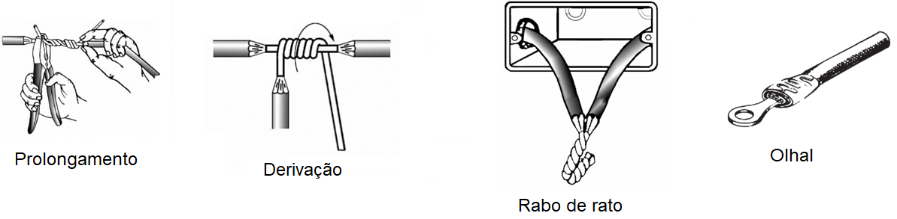

Condutores Elétricos e a NBR 5410
Os condutores elétricos são o "coração" de qualquer instalação elétrica. A escolha e instalação correta destes componentes é crucial para a segurança e eficiência do sistema.
A Norma Brasileira ABNT NBR 5410 (Instalações Elétricas de Baixa Tensão) é o principal guia no Brasil.
- Estabelece condições para garantir a segurança de pessoas e conservação dos bens.
- Define seções mínimas: 2,5 mm² para tomadas e 1,5 mm² para iluminação.
- Exige que condutores possuam o selo do Inmetro.
Material dos Condutores (Cobre vs. Alumínio):
- Cobre: É o material padrão e obrigatório para condutores em instalações elétricas residenciais, devido à sua excelente condutibilidade e resistência mecânica.
- Alumínio: De acordo com a NBR 5410, o uso de condutores de alumínio é proibido em instalações residenciais.
- Exceções: O alumínio só é permitido em instalações comerciais ou industriais, e apenas para condutores com seção igual ou superior a 16 mm², sob condições específicas de projeto e manutenção especializada.
Diferença Fundamental: Fio Elétrico vs. Cabo Elétrico
1. Fio Elétrico (Condutor Rígido)
- Composição: Apenas um filamento de cobre de seção maciça.
- Flexibilidade: Baixa. Difícil de manusear em eletrodutos com muitas curvas.
- Uso: Comum em instalações antigas; superado pelos cabos flexíveis.
- Diâmetro (Ex 1,5 mm²): 1,36 mm nominal.
2. Cabo Elétrico (Condutor Flexível)
- Composição: Múltiplos filamentos finos de cobre trançados.
- Flexibilidade: Alta. Fácil de instalar e deslizar em eletrodutos.
- Uso: Padrão em instalações modernas (NBR NM 247-3).
- Diâmetro (Ex 1,5 mm²): 1,50 mm nominal.
NBR 5410: Ambos são válidos, mas os cabos flexíveis são preferidos pela facilidade de instalação.
Cores dos Condutores (Identificação NBR 5410)
| Função do Condutor |
Cor Segundo NBR 5410 |
Observação |
| NEUTRO (N) |
AZUL CLARO |
Cor de uso exclusivo. |
| PROTEÇÃO (TERRA) |
VERDE ou VERDE/AMARELO |
Cor de uso exclusivo. |
| FASE (L) |
Preto, Vermelho, Marrom ou Cinza |
Qualquer cor, exceto azul ou verde. |
Tipos Específicos: Cabo Multipolar vs. Cabo PP
Cabo Multipolar
Definição: É qualquer cabo composto por duas ou mais veias reunidas sob uma única cobertura não metálica.
- Estrutura: Veias isoladas individualmente e envelopadas por uma capa protetora.
- Uso Comum: Alimentação de motores, painéis e subidas de prumadas. Alta resistência mecânica.
Cabo PP
Estrutura: É um tipo de cabo flexível multipolar com duas capas protetoras (dupla isolação).
- Uso Comum: Conexão de aparelhos móveis e eletrodomésticos (liquidificador, extensões).
- Diferença: Caracterizado pela alta flexibilidade e resistência à abrasão (NBR NM 247-5).
Emendas e Conexões de Cabos (NBR 5410)
Regras Fundamentais:
- Qualidade: Deve ser firme e apertada para evitar aquecimento.
- Isolamento: Fita PVC ou Autofusão.
- Localização: Apenas em caixas de passagem; nunca dentro de eletrodutos.
- Solda: Permitida para conexão elétrica, mas proibida para pontas em bornes.
Principais Tipos de Emendas Manuais
- Prolongamento: Para unir dois condutores em linha reta.
- Derivação: Cria um ramal (conexão em T) sem cortar o cabo principal.
- Rabo de Rato: União de fios dentro de caixas de passagem.

Figura 1: Emendas Manuais de Prolongamento, Derivação e Rabo de Rato.
Conectores Elétricos (Prática Moderna)
Conector tipo Wago
Sistema de mola de pressão constante. Dispensa fita isolante.
- Vantagens: Reutilizável, rápido e imune a vibrações.
Ver no Google
Conector de Torção
Mola cônica interna que une os fios por rotação.
- Vantagens: Baixo custo e isolação integrada.
Ver no Google
Conector de Derivação
Cria ramais através de perfuração (piercing) da isolação.
Ver no Google
Barra de Terminais (Sindal)
Conexão por parafusos em estrutura isolada. Muito robusto.
Ver no Google
Terminais Olhal/Forquilha
Crimpados na ponta do cabo para fixação em parafusos.
Ver no Google
Nota: Sempre respeite a bitola máxima do conector.
📝 Exercícios de Fixação
Teste seus conhecimentos sobre os cabos elétricos e as diretrizes da NBR 5410:
1. De acordo com a NBR 5410, quais são as seções nominais mínimas (bitolas) permitidas para circuitos de iluminação e tomadas de uso geral (TUGs), respectivamente?
- a) ( ) 1,0 mm² e 2,5 mm²
- b) ( ) 1,5 mm² e 2,5 mm²
- c) ( ) 1,5 mm² e 4,0 mm²
- d) ( ) 2,5 mm² e 2,5 mm²
2. Sobre o uso de materiais condutores em instalações residenciais, assinale a alternativa CORRETA:
- a) O alumínio é permitido, desde que a seção seja maior que 10 mm².
- b) O cobre e o alumínio podem ser usados livremente em qualquer instalação.
- c) O uso de condutores de alumínio é proibido em instalações residenciais pela NBR 5410.
- d) O fio rígido de cobre não é mais permitido, apenas cabos flexíveis.
3. Relacione as cores dos condutores conforme a padronização da NBR 5410:
( 1 ) Azul Claro
( 2 ) Verde ou Verde/Amarelo
( 3 ) Vermelho, Preto ou Marrom
( ) Condutor de Fase
( ) Condutor Neutro
( ) Condutor de Proteção (Terra)
4. Analise a afirmação abaixo e identifique o erro técnico baseado na norma:
"Para agilizar a obra, as emendas dos cabos flexíveis foram feitas utilizando fita isolante de alta qualidade e localizadas estrategicamente dentro dos eletrodutos, entre as caixas de passagem."
Resposta: __________________________________________________________________________
✅ Clique aqui para ver o Gabarito
1. b) 1,5 mm² para iluminação e 2,5 mm² para tomadas.
2. c) O alumínio é proibido em residências (permitido apenas em casos específicos comerciais/industriais acima de 16mm²).
3. (3) Fase / (1) Neutro / (2) Terra.
4. Erro: De acordo com a NBR 5410, as emendas nunca devem ficar dentro dos eletrodutos; elas devem estar localizadas exclusivamente dentro de caixas de passagem.